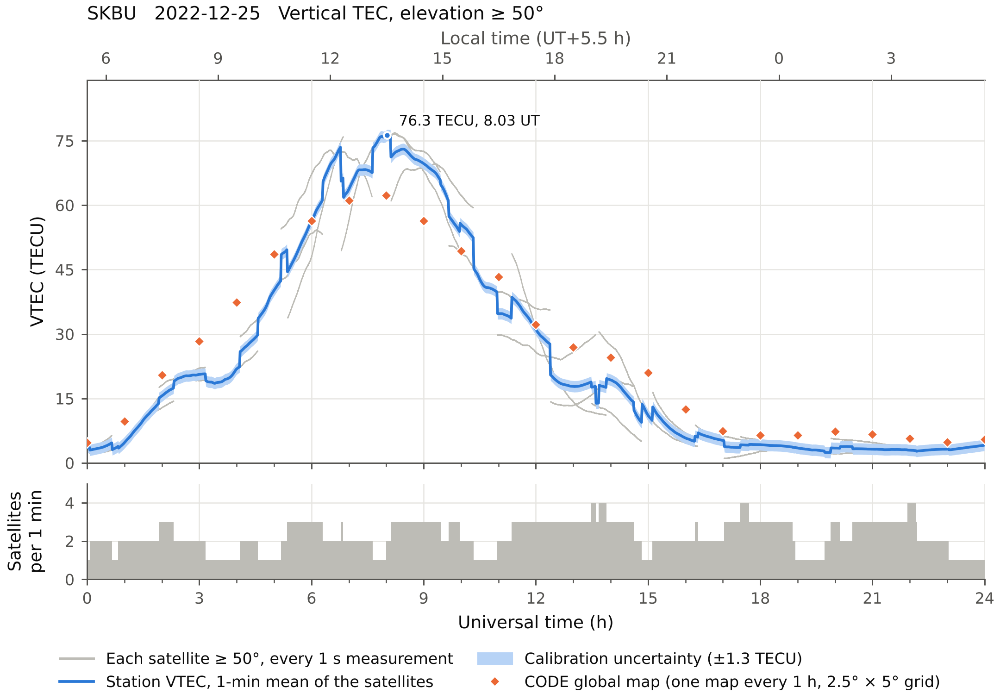
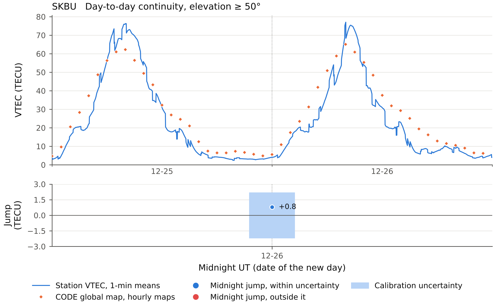
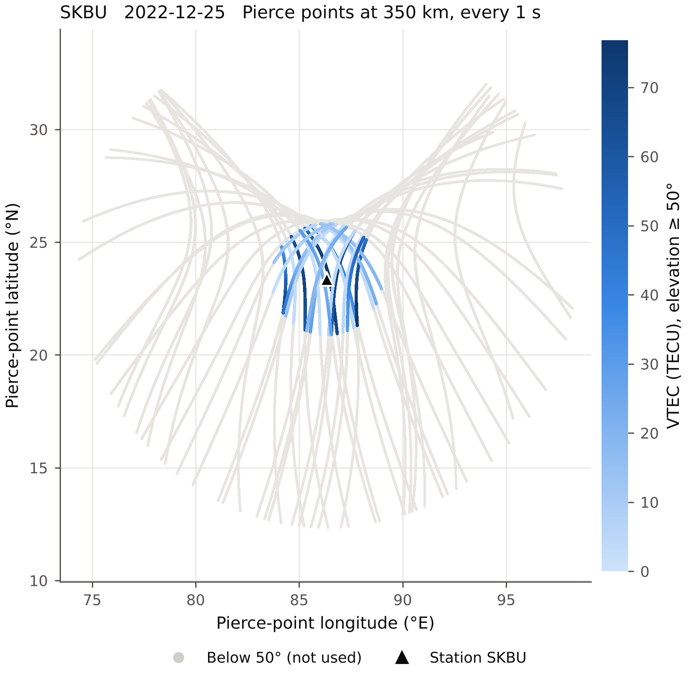

Why it exists
The usual GPStation-6 chain hides three problems.
Receiver file, RTKLIB, RINEX, a closed calibration program, then a .Cmn file you have to trust. gpstec does the same job in the open, and checks itself.
Wrong position
The RINEX header can put your station inside the Earth.
RTKCONV 2.4.2 writes latitude, longitude and height into the field meant for Earth-centred X, Y, Z. Every elevation and pierce point computed from it is wrong. gpstec takes the position from your configuration, always.
No cut-off
Low rays bend the result near the anomaly crest.
The thin-shell mapping is least reliable for low satellites. Choose any elevation cut-off; 50° is the default, and lower data never reaches the products.
No checks
A black box gives you numbers, not confidence.
Every day gets a calibration report: the CODE global map at night, an uncertainty band, and a test that each day joins the next one at midnight.
Method
From receiver file to vertical TEC.
One command runs all six steps. Each day is calibrated from its own data.
Convert
RTKLIB
convbin -r novturns the NovAtel.GPSfile into RINEX and writes the correct station position into the header.Geometry
Broadcast ephemeris or SP3 orbits give azimuth, elevation and the pierce point on the 350 km shell for every second.
Slant TEC
Code
P2 − C1is absolute but noisy; phaseL1λ1 − L2λ2is precise but offset. Each satellite pass is levelled to the code, and passes that cross midnight are levelled as one.Biases
Satellite biases from CODE DCB files, downloaded for you. The receiver bias comes from that night's data by least squares, allowing north–south and east–west gradients, and never makes VTEC negative.
Vertical TEC
VTEC = STEC · √(1 − (Re cos E / (Re + h))²), using only satellites above the cut-off.
Measured values only
Station VTEC is the 1-minute mean of the satellites’ 1 s values. The CODE map is shown only at its hourly map epochs. Nothing is interpolated in time.
Figures
Made for the paper, not the screen.
Vector PDF with editable text and 300 dpi PNG. Legends sit outside the data, colours are safe for colour-blind readers, and the tests fail if any two labels touch.



Get started
Three commands, then one per week of data.
Install
Python 3.9 or newer on Linux, macOS or Windows. install-convbin builds RTKLIB's converter and needs git, gcc and make; it is only needed for .GPS files.
pip install gpstec gpstec install-convbin gpstec init
Run
Put your antenna's latitude, longitude and height in station.toml. Bias files and global maps are downloaded into dcb/ and gim/.
# a week of receiver files gpstec run -c station.toml -o results 2242_*.GPS # or RINEX, with another cut-off gpstec run -c station.toml -o results skbu3590.22o --elev 40
What you get each day
Numbers you can defend.
1-minute VTEC table
1-minute mean of the satellites, scatter, satellite count and the hourly global-map values, in CSV, plus Gopi-style .Std and the full 1 s .Cmn file.
Calibration report
Every bias, the method, the night-time difference from the CODE map, and warnings, in one JSON file per day.
Multi-day views
All days overlaid, a day-by-hour map, and the midnight continuity figure with a summary table.
Citing
If gpstec helps your research, please cite it.
Banerjee, D. (2026). gpstec: calibrated GPS total electron content from GPStation-6 receivers (version 1.1.0). https://github.com/dipanjanbanerjee/gpstec